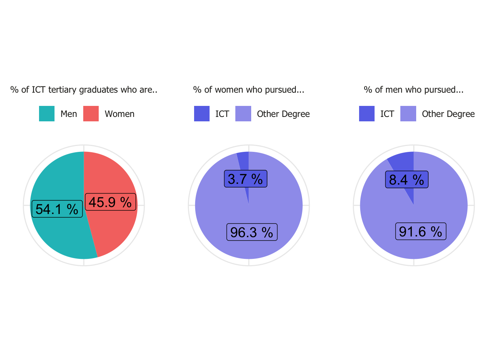
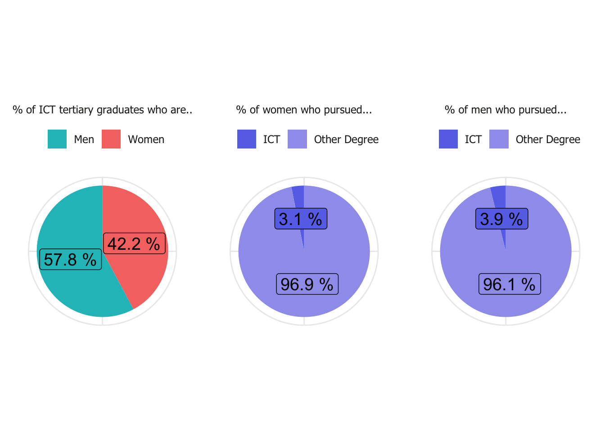
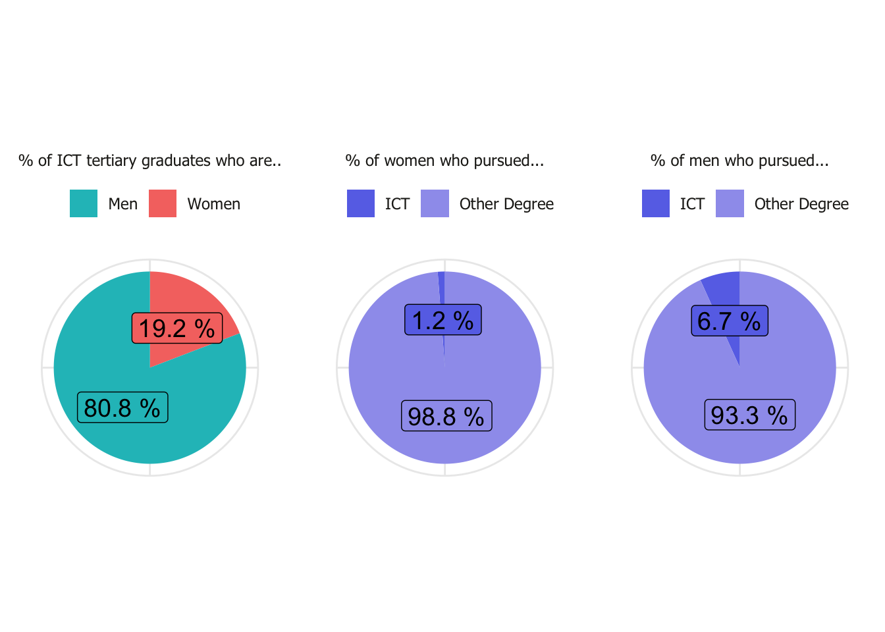
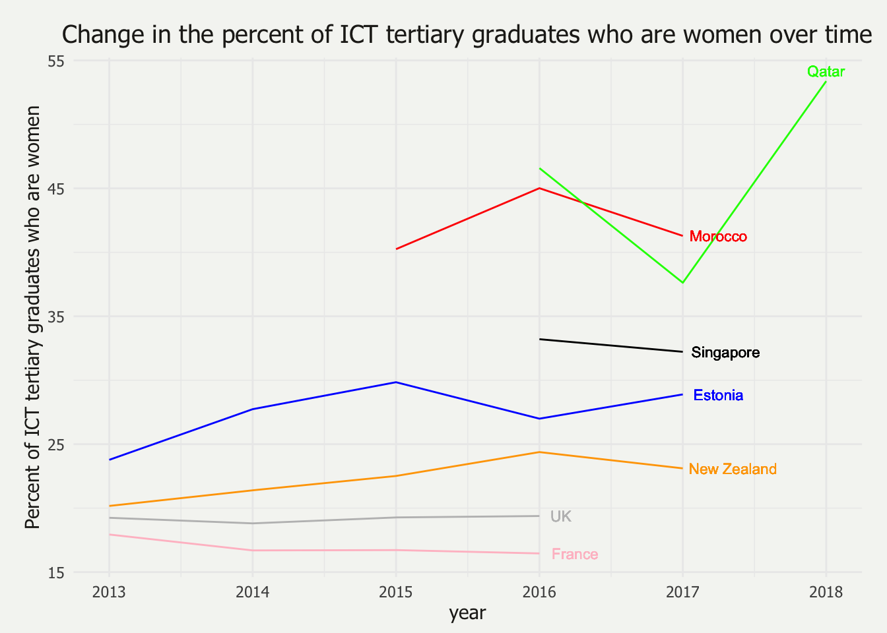

ICT Gender-Equality Paradox
2020-10-02
Chapter 1 Exploratory Data Analysis
1.1 ICT Graduation Trends (Country Comparison)
1.1.1 Qatar

1.1.2 Morocco

1.1.3 United Kingdom

1.2 ICT Graduation Trends (Change Over Time)

1.3 Internet Usage

1.4 Interest: Oregon Vocational Interest Scales (ORVIS) from the SAPA Project
The ORVIS contains seven total scales: Leadership, Organization, Altruism, Creativity, Analysis, Production, Adventure, and Erudation. The Analysis scale is the scale of interest for this research. Ten items compose this scale, all of which are positively scored. The items are as follows:
- Be a chemist
- Design a laboratory experiment
- Be a mathematician
- Explain scientific concepts to others
- Be a physicist
- Carry out medical research
- Be a scientific reporter
- Solve complex puzzles
- Develop a computer program
- Be a statistician
These data are a subet of the SAPA project. While the PISA dataset offer robust insights into the academic interests of fiften year-olds, less is known about adults’ interests in these same areas.
Of the participants who selected a country that has 500 or more participants, 219,728 participants form the final dataset used for analysis. Participants choose between “male” and “female” to select their gender identity, with \(63.52\%\) (\(N = 139,567\)) identifying as female and the other \(36.48\%\) (\(N = 80,162\)) identifying as male. The median age of the particpants is 22, ranging from 14 to 90.